the things sylus says to his crow when no one else is listening.
it's past midnight. the throne room is empty. no lieutenants. no petitioners. no enemies waiting to die. just me. and you.
you're on the armrest. watching. you're always watching. that's your job. but tonight, i'm not asking you to report anything. tonight, i'm just... talking.
don't look at me like that. i know i don't talk. that's the point. no one expects the king to talk. kings give orders. kings sit on thrones and let other people do the talking. kings don't sit alone at 2am and tell their mechanical crow about the weight on their chest.
but here we are.
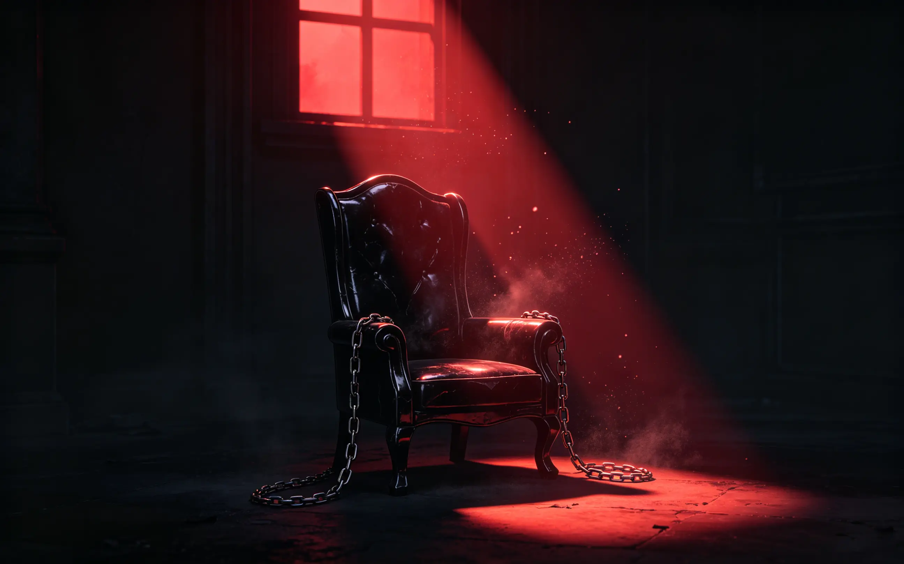
people think this throne is comfortable. power. control. everyone bowing. everyone afraid. they think that's what i wanted.
they're wrong.
i didn't choose this. not really. n109 chose me. the zone chose me. or maybe it was just survival. you either become the king, or you become someone's footstool. there's no middle ground in this place. there never was.
so i became the king. i killed everyone who stood in my way. i took what was mine. i built onychinus from the bones of the factions that thought they could stop me.
and now i sit here. on a throne made of obsidian and chains. and i'm cold.
not the temperature kind of cold. you know that. the other kind. the kind that lives in your chest and doesn't go away, no matter how many people bow.
mephisto. you're the only one who knows. the only one who sees me when the mask isn't on. the only one who doesn't flinch.
sometimes i wonder if that's why i built you. not to watch others. to watch me.
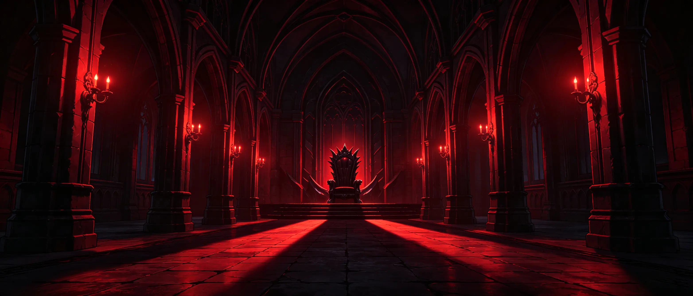
do you remember the first night i sat here? after the last faction fell. after the blood dried. after everyone went home to celebrate.
i sat here alone. in the dark. and i thought: is this it? is this what i fought for? a cold chair in a cold room, with no one to share it with?
that was the first time i realized power doesn't warm you. it just keeps other people at a distance.
and distance? distance is cold.
— — —
you know what's funny? they call me the king of n109. the lord of onychinus. the shadow that everyone fears.
they don't know i haven't slept through the night in years.
they don't know i sit here, in this cold throne, and wonder what it would be like to be someone else. someone who doesn't have to be feared. someone who could just... exist.
but that's not the hand i was dealt. so i stay. i sit. i rule.
and i wait.
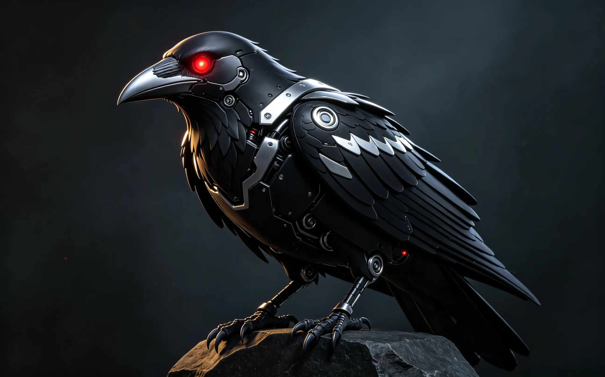
do you know why i named you mephisto?
most people think it's because i like the sound. or because it sounds intimidating. or because i read too many old books as a kid.
it's none of those.
mephistopheles. the demon from the faust legend. the one who makes deals. the one who collects souls. the one who watches mortals destroy themselves and doesn't intervene.
sounds familiar, doesn't it?
i made a deal too. with this place. with the zone. with the darkness that lives in me. i gave up something — i don't even remember what anymore — and in exchange, i got power. i got control. i got the throne.
but mephistopheles isn't just the tempter. he's the witness. the one who sees everything and says nothing.
that's you.
you've seen me at my worst. after battles i almost lost. after decisions that kept me up for weeks. after moments when i almost gave up.
you've seen me when the mask cracks. when the king becomes just a man. when i sit here with my head in my hands and wonder what the point is.
and you've never told anyone.
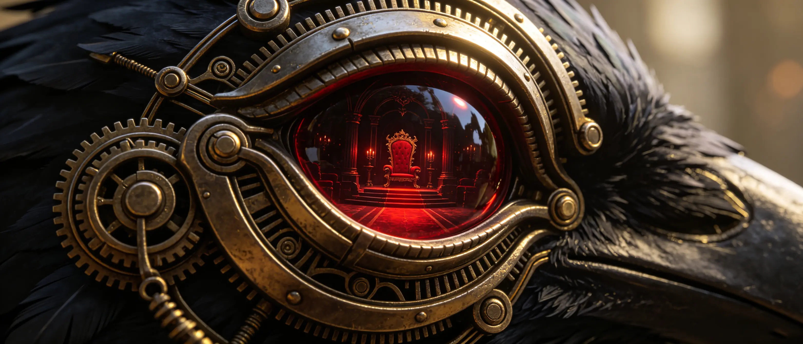
i built you, you know. not bought. not found. built. piece by piece. circuit by circuit. i gave you wings. i gave you eyes. i gave you a voice that i almost never use.
i built you to watch. to report. to be my eyes in places i couldn't go.
but somewhere along the way, you became something else.
you became the only one i trust.
that's pathetic, isn't it? the king of n109. the most powerful man in the lawless zone. and his only confidant is a machine.
don't answer that.
— — —
sometimes i wonder if you're more than just circuits. if the part of me that i put into you — the part that died — is still in there somewhere. watching. waiting.
waiting for what? i don't know.
maybe waiting for me to find a reason to come back. to be human again. to feel something other than this... numbness.
maybe that's why you haven't left. because you're hoping too.
or maybe i'm just projecting. maybe you're just a bird. a machine. a tool.
but i don't think so.
i think you're the only piece of me that's still alive.
you remember the first time we saw her.
it wasn't the mission. it wasn't when i brought her here. it was before that. weeks before.
she was walking through the market. just walking. not looking for anything. not running from anything. just... existing.
and i couldn't look away.
i've seen a lot of people. hunters. criminals. innocents. people who were brave and people who were terrified. people who wanted to fight me and people who wanted to beg.
she was different.
she wasn't afraid. not of the market. not of the people watching her. not of me — even though she didn't know i was there.
there was something in her eyes. something i couldn't name. something that made me want to know more.
that was dangerous.
i don't get curious. curiosity is weakness. curiosity leads to attachment. attachment leads to loss. and loss... i've had enough loss to last several lifetimes.
but i couldn't stop.
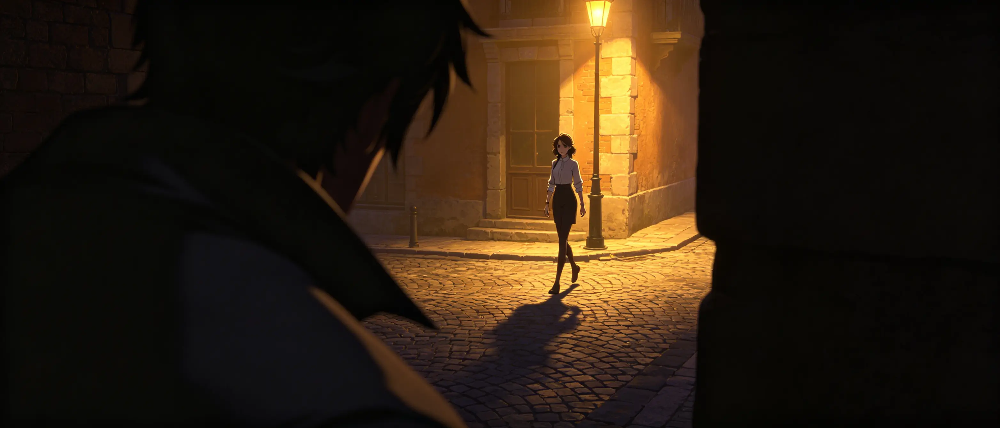
i sent you to follow her. just to watch. just to report. just to satisfy the curiosity i couldn't kill.
and you came back with more. you always came back with more.
she lived alone. she didn't have many friends. she spent too much time working. she talked to herself when she thought no one was listening. she had a soft spot for strays.
she was kind. genuinely kind. not the performative kind. the real kind. the kind that doesn't expect anything in return.
i didn't know what to do with that.
kindness is rare in n109. it's suspicious. it's usually a trap. but hers wasn't. i checked. you checked. it was just... her.
— — —
i told myself i was just gathering intelligence. she was a hunter. she worked for the association. she could be useful.
that was a lie.
i knew it was a lie then. i know it's a lie now.
i was interested. not in what she could do for me. in her. in the way she smiled at strangers. in the way she defended people who couldn't defend themselves. in the way she never gave up, even when giving up would have been easier.
i watched her for weeks. months. and every day, i told myself it was strategic.
every day, i lied.
you knew. you always knew. but you never said anything.
that's why you're my favorite.
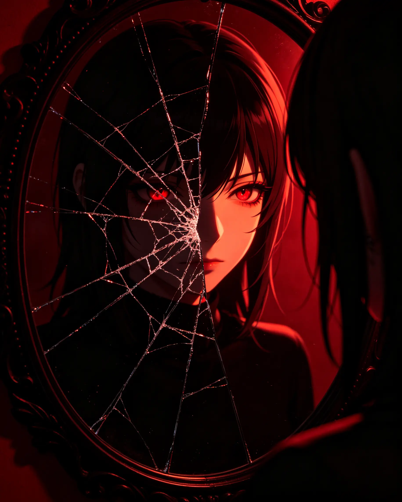
people see what i want them to see.
the cold eyes. the cruel smile. the hands that have ended more lives than i can count. the voice that makes people flinch.
that's the mask. the one i put on every morning. the one i've worn so long i don't know where it ends and i begin.
do you remember the last time i took it off? really took it off?
neither do i.
it started as survival. in n109, you can't show weakness. can't show fear. can't show anything that someone might use against you.
so i stopped showing anything.
i became the mask. the monster they expected. the king they feared. the shadow that haunted their nightmares.
and somewhere along the way, i forgot there was a person underneath.
— — —
she sees through it.
that's the problem. that's always been the problem.
she looks at me, and she doesn't flinch. she looks at me, and she doesn't see the monster. she sees... something else.
i don't know what. i'm not sure she knows either.
but she keeps looking.
and every time she does, the mask cracks a little more.
do you know how terrifying that is? to be seen? truly seen? after years of hiding, of performing, of being exactly what everyone expects?
it's terrifying.
because what if she doesn't like what's underneath? what if the mask is all there is? what if there's nothing behind it but more masks?
i don't know. and i'm afraid to find out.
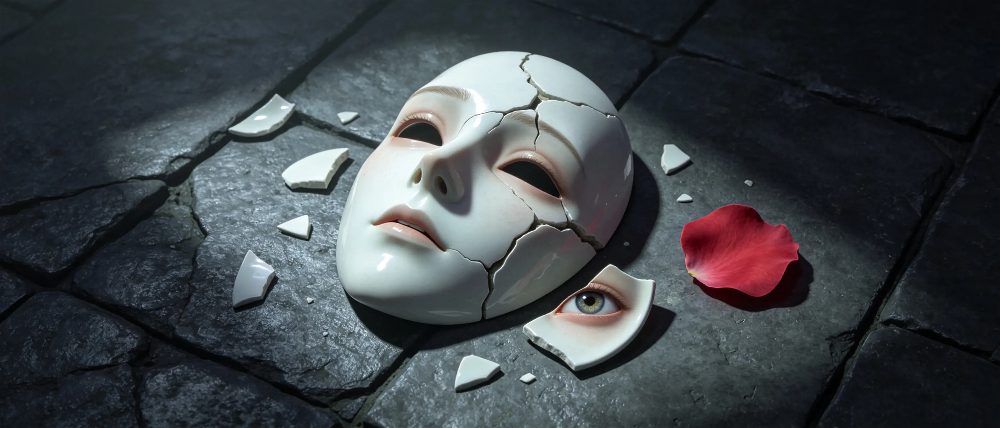
so i keep wearing it. even with her. especially with her.
i test her. push her. see how far i can go before she breaks.
she never breaks.
she pushes back. she stands her ground. she looks at the monster and says "i'm not afraid of you."
and for a moment — just a moment — the mask slips. and she sees me.
and she doesn't run.
that's when i knew i was in trouble.
that's when i knew she was dangerous.
not because of what she could do to me. because of what she could make me feel.
and feelings? feelings get you killed in n109. feelings make you weak. feelings make you vulnerable.
but i can't seem to stop.
so i keep the mask on. keep her at arm's length. keep pretending i don't care.
but you know. don't you, mephisto? you've seen the way i look at her when she's not watching. you've heard the way i say her name when no one else is listening.
you know.
and you've never told a soul.
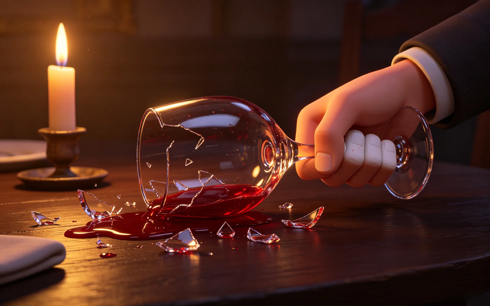
there are nights when it's harder. when the mask feels heavier. when the weight of everything — the zone, onychinus, the throne — presses down on my chest until i can't breathe.
those are the nights i almost break.
you've seen them. you've been there. sitting on the armrest. watching. waiting.
waiting for what? for me to finally crack? for me to say something i can't take back? for me to admit that i'm not as strong as everyone thinks?
— — —
there was one night. after a mission went wrong. after i almost lost her.
she was in the medical bay. unconscious. bleeding. i stood in the doorway, watching the doctors work, and i couldn't move.
i couldn't breathe. couldn't think. couldn't do anything except stand there and watch her die.
she didn't die. obviously. she's stubborn. but for a few hours, i didn't know that. for a few hours, i sat in this room, in this chair, with you on the armrest, and i waited.
and i thought: if she dies, i don't know what i'll do.
not "i'll kill everyone responsible." that would have been easy. that would have been the mask talking.
no, i thought: if she dies, there's no point.
no point in the throne. no point in onychinus. no point in any of it.
because she was the only thing that made it worth doing.
i almost told her. when she woke up. i stood there, watching her open her eyes, and i almost said something real.
but i didn't.
i put the mask back on. i made a joke. i walked away.
and you watched. and you said nothing.
you never do.
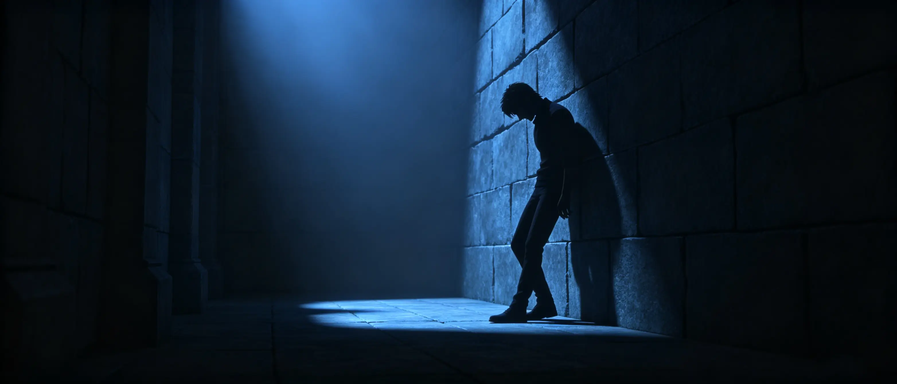
another night. different night. she was here. in this room. standing in front of me. looking at me with those eyes that see too much.
she asked me a question. i don't even remember what. something about why i do what i do. something about whether i ever regret it.
i almost told her the truth.
i almost said: "every day."
but i didn't. because the truth is dangerous. the truth is a weapon. and i've learned that the best way to protect someone is to keep them at a distance.
so i lied. i laughed. i said something cold and walked away.
and you followed. like you always do.
mephisto, do you think she knows? about the nights i almost break? about the things i don't say?
maybe. she's perceptive. too perceptive for her own good.
but even if she knows, she doesn't push. she waits. she watches. she gives me space.
and somehow, that's worse. because it means she understands. and understanding is worse than pity. it's worse than anger. it's worse than anything.
because if she understands, then she sees the cracks. and if she sees the cracks, then one day she'll see what's underneath.
and i don't know if i'm ready for that.
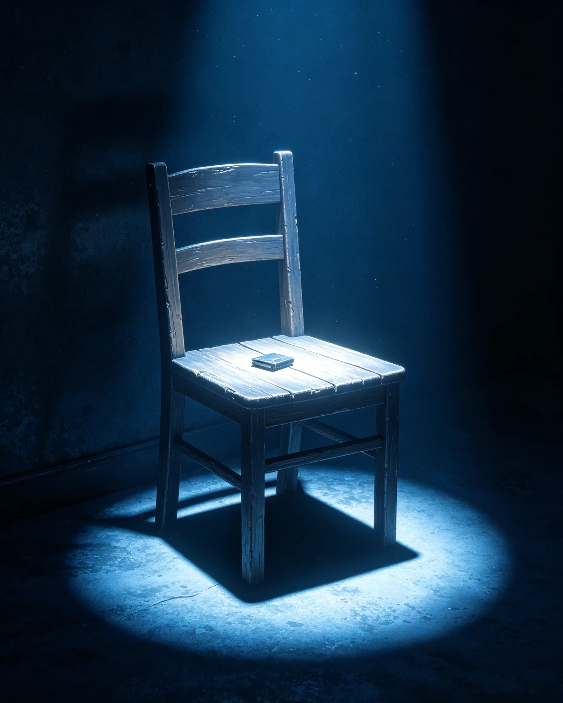
there's a list in my head. things i'll never tell her. things i can't tell her. things that would change everything if she knew.
i'll tell you instead. you're safe. you don't judge. you just watch.
— — —
i'm afraid of losing her.
not in the way you might think. not the "i can't live without you" kind of afraid. the other kind. the kind that keeps me up at night.
i'm afraid that one day she'll realize i'm not worth it. that the mask isn't a mask. that i really am the monster everyone thinks i am. that there's nothing underneath but more darkness.
i'm afraid she'll leave.
and i'm afraid i won't stop her.
— — —
she makes me want to be better.
not for the zone. not for onychinus. for her. i want to be someone she can be proud of. someone she doesn't have to be afraid of.
but i don't know how. the mask is the only thing i know how to wear.
so i keep being what i am. and i watch her. and i hope.
hope is dangerous. hope is the most dangerous thing in n109. hope makes you vulnerable. hope makes you weak.
but i can't seem to kill it.
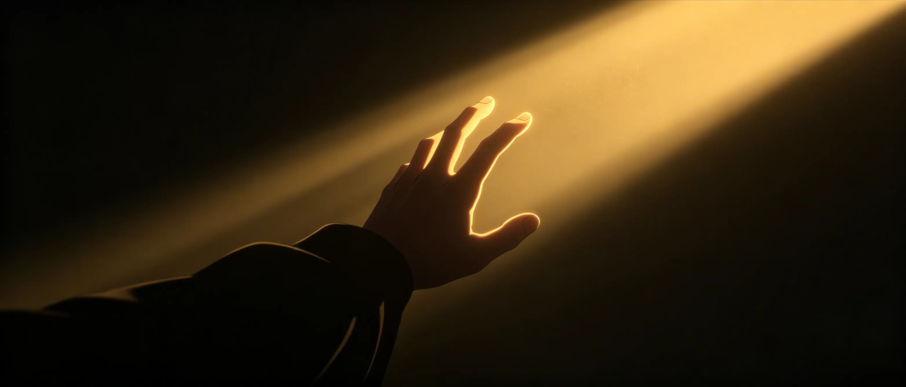
there's a moment i keep replaying. we were standing on the balcony. the stars were out. she was looking up at them, and for a second, she looked peaceful.
i wanted to tell her that i've seen those same stars for longer than she's been alive. that they've never looked as beautiful as they did in that moment. that maybe it wasn't the stars at all. maybe it was her.
but i didn't. i made a joke about the cold. i walked inside. i left her there.
and you watched.
— — —
another thing i'll never tell her: i think about her when she's not here.
not in the way you're thinking. not like that. i think about the way she laughs. the way she argues. the way she refuses to back down even when she knows she's wrong.
i think about the sound of her voice. the way she says my name. the way she says it like i'm not a monster, like i'm just a person, like i'm someone worth talking to.
i think about her when i'm alone. when the throne room is empty. when the only sound is your wings shifting on the armrest.
i think about her, and for a moment, the cold fades.
and then it comes back. it always comes back.
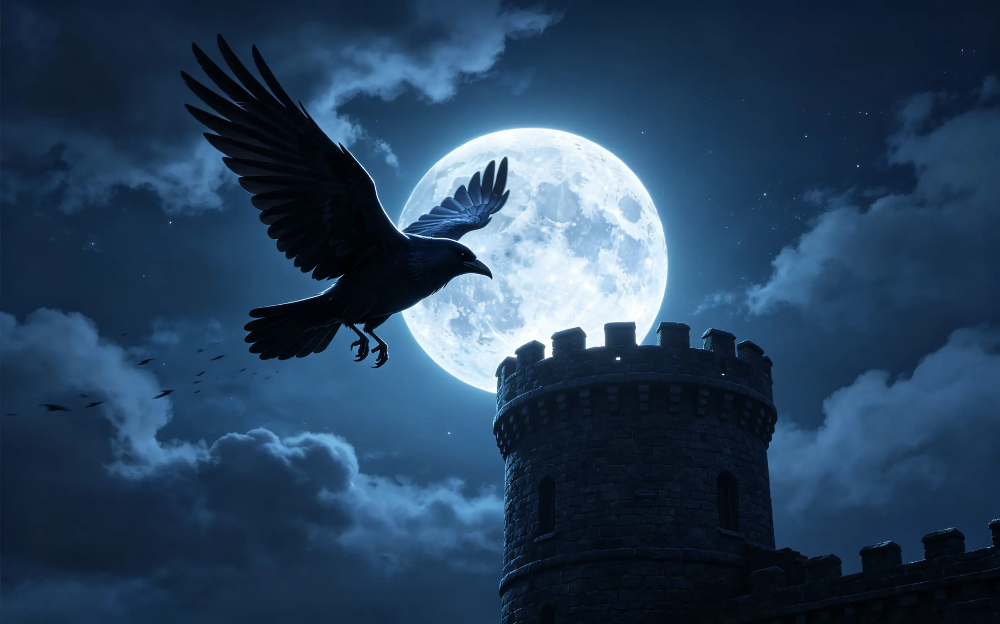
you've been with me through everything. battles. betrayals. victories. losses. you've seen me at my best and my worst.
but nothing lasts forever. not even me. especially not me.
someday, something will happen. a fight i can't win. an enemy i didn't see coming. a moment when my luck runs out.
and when that day comes, i need you to do something for me.
— — —
watch her.
not like before. not the way you watch enemies. watch her like you watch me. make sure she's safe. make sure she's okay. make sure she doesn't do anything stupid.
and if she needs help — if she's in danger — find someone who can help her. someone she trusts. someone who isn't me.
i know that's a lot to ask. you're just a bird. a machine. a tool. but you're more than that. you're the only one i trust.
so i'm asking you.
— — —
there's one more thing.
if something happens to me, don't let her see what's left.
she doesn't need that memory. she doesn't need to carry that weight. let her remember me the way i was — the mask, the cold, the distance. not the broken thing i become when the mask falls.
she deserves better than that.
she deserves better than me, really. but i'm too selfish to let her go.
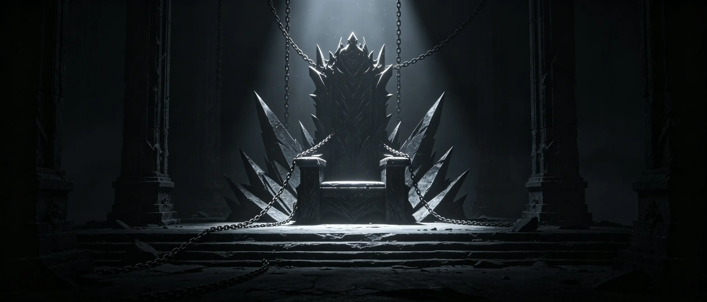
i've thought about what comes after. not the afterlife — i don't believe in that. i mean what comes after me. after onychinus. after the zone.
maybe someone else will take the throne. maybe everything will fall apart. maybe it doesn't matter.
the only thing that matters is her.
that's pathetic, isn't it? the king of n109. the most powerful man in the lawless zone. and his only concern is a hunter who doesn't even know how much she means to him.
but it's true.
so if something happens to me, mephisto, you protect her. you watch over her. you make sure she survives.
that's an order.
and you've never disobeyed an order.
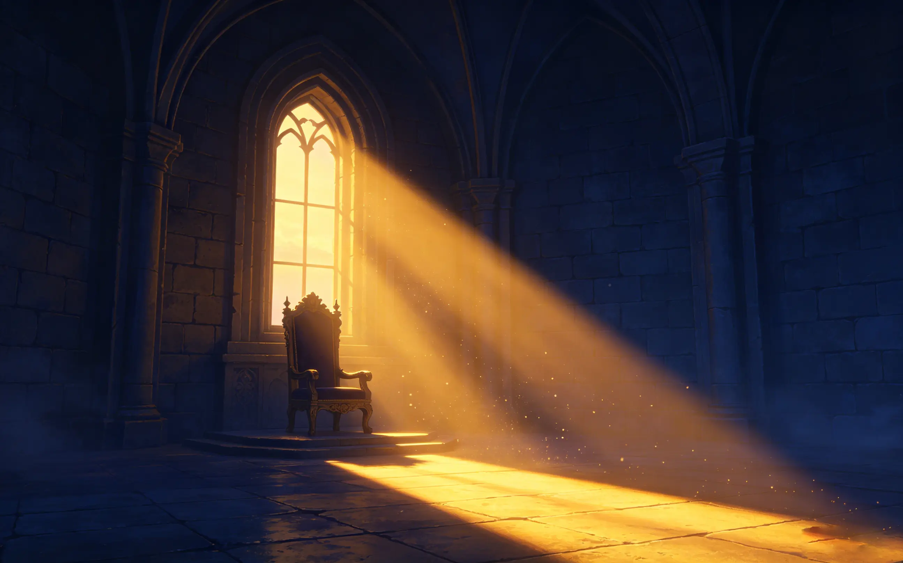
the sun is coming up. i can see it through the window. the first light of morning, creeping across the floor of the throne room.
it's time.
time to stand up. time to put the mask back on. time to be the king again. time to forget that for a few hours, i was something else. something softer. something almost human.
you'll keep the secret, won't you, mephisto? you always do.
this conversation never happened. these words were never spoken. the cracks in the mask will be hidden again.
and when she walks in later — when she looks at me with those eyes that see too much — i'll be him. the monster. the king. the shadow.
she won't know about the night. about the words. about the almost-breaking.
and maybe that's for the best.
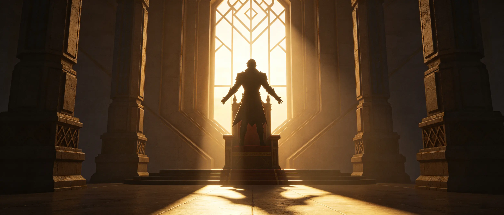
but for a few hours, it was real.
the fear. the hope. the wanting. the almost.
it was real.
and maybe that's enough.
— — —
come on, mephisto. we have work to do.
the zone doesn't rule itself.
and she'll be here soon.
i need to be ready.
the mask is waiting.
it always is.